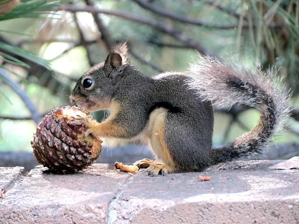
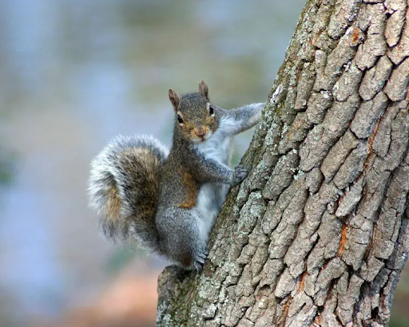

Diet
Squirrels are herbivorous rodents, with a diet that varies depending on species and environmental factors. Their primary food sources include nuts, seeds, fruits, and fungi, but they may also consume insects, bird eggs, and small vertebrateas.
Habitat

Squirrels are highly adaptable and can be found in a wide range of environments, including forests, parks, gardens, and urban areas. Tree-dwelling species often build nests called dreys in the branches, while ground squirrels dig burrows for shelter and protection.
Bio
Squirrels belong to the family Sciuridae, which includes various species such as tree squirrels, ground squirrels, and flying squirrels. Characterized by their sharp incisor teeth that continuously grow, squirrels have a distinctive bushy tail that aids in balance and communication.